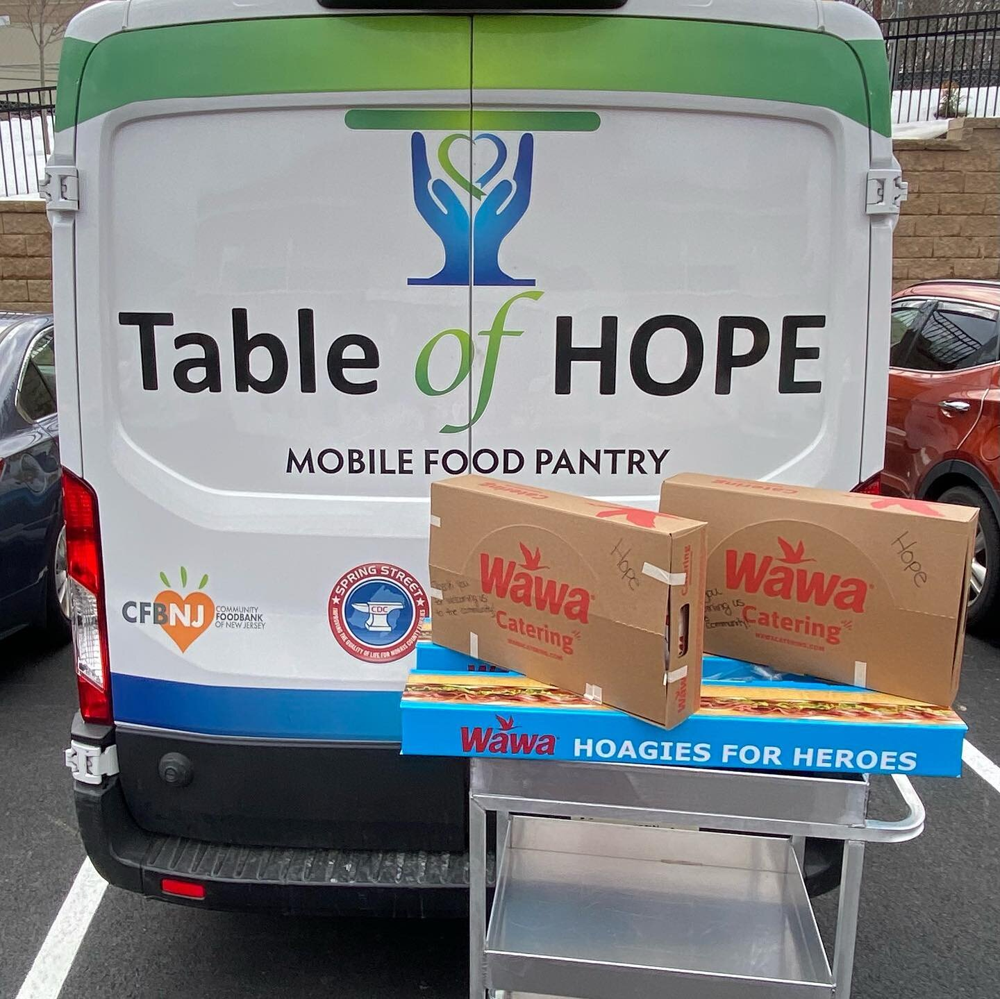

Community Service
|
My current involvement consists of Homeless Solutions and Table of Hope. Regarding my work for Homeless Solutions and Table of Hope, I was a food server and served breakfast and dinner two to three times a month for four years. I enjoyed my time involved and loved helping as many people as I could. I also was in charge of a Thanksgiving food drive and rasing money to furnish apartments for Homeless Solutions. My role in the Thanksgiving food drive was prominent. I was in charge of organizing who donated what and sending the canned food to Homeless Solutions. The task was straightforward: I made a form to organize everything and coordinated with everyone to ensure everything was in order. In terms of the fundraiser I raised enough money to fully furnish an apartment with furniture, rugs, etc. I even got to see the apartment when it was done! It looked amazing. |
|
|  |
This is an example of one of the mobile food pantrys which deliver goods to those who are homeless. There is also an in person option as well, which I often particpated in. During COVID I particpated in drive by food drives in order to still serve food while adhering to COVID guidelines. They were a great alternative way to serve the community while keeping everyone safe. |